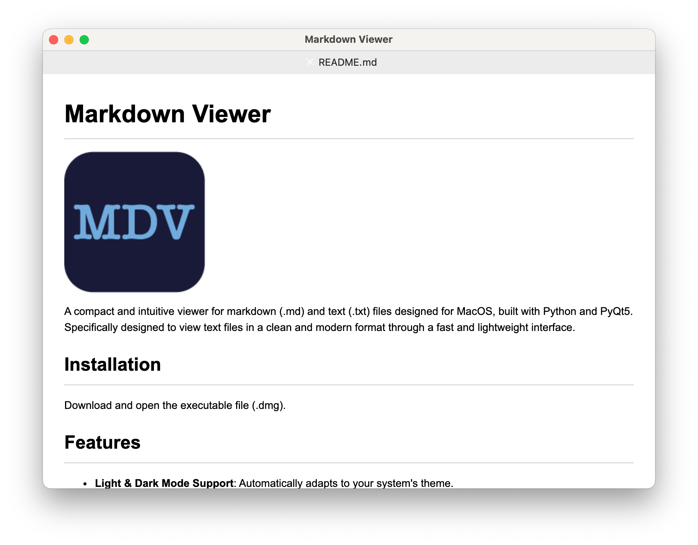

"Markdown Viewer" is an intuitive application designed for MacOS, allowing users to view markdown (.md) and text (.txt) files.
Built with Python and PyQt5, this tool offers a sleek and lightweight interface with standout features such as light and dark mode support, tabbed navigation, keyboard shortcuts, and custom themes.
It is powered by Mistune for accurate and swift markdown content interpretation.
>
Download here
>
More info in
GitHub